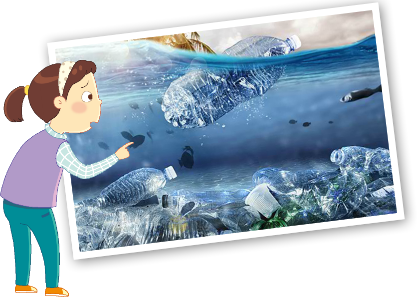

- 이야기
- 일기장
- 물음 +
-

쓰레기 섬은 태평양 한가운데 둥둥 떠있는 플라스틱 섬입니다. 비닐, 유리, 플라스틱과 같이 썩지 않는 쓰레기가 바다를 떠돌다가 모인 것입니다.
-
5월 12일
우리가 버린 쓰레기로 바다에 섬이 만들어졌다니 너무 부끄러웠다. 그래서 환경을 살리는 운동을 하기로 하였다. 우리 학교 3학년에서는 재활용품 모으기 운동으로 ‘빈 병 모으기’를 실천했다. 일주일 동안 빈 병을 모아 한 상자에 25개씩 넣었더니 상자 3개에 꽉 찼다. 이렇게 4주 동안 모으면 개나 모을 수 있다고 생각하니 정말 뿌듯하다.
-
-
쓰레기 섬에 대해 들어본 적이 있나요?
바다 위에 쓰레기가 섬처럼 모인 것입니다.평소에 많이 사용하는 일회용품에는 어떤 것들이 있나요?
빨대, 비닐봉지, 일회용 컵, 나무젓가락 등입니다. -
일회용품을 줄이기 위해 어떤 노력을 할 수 있나요?
일회용품을 사용하지 말고, 재사용할 수 있는 것을 사용합니다.인서네 학교에서는 어떤 노력을 하였나요?
직접 사용했거나 주변에서 볼 수 있는 빈 병을 모아서 재활용하려고 합니다.
-